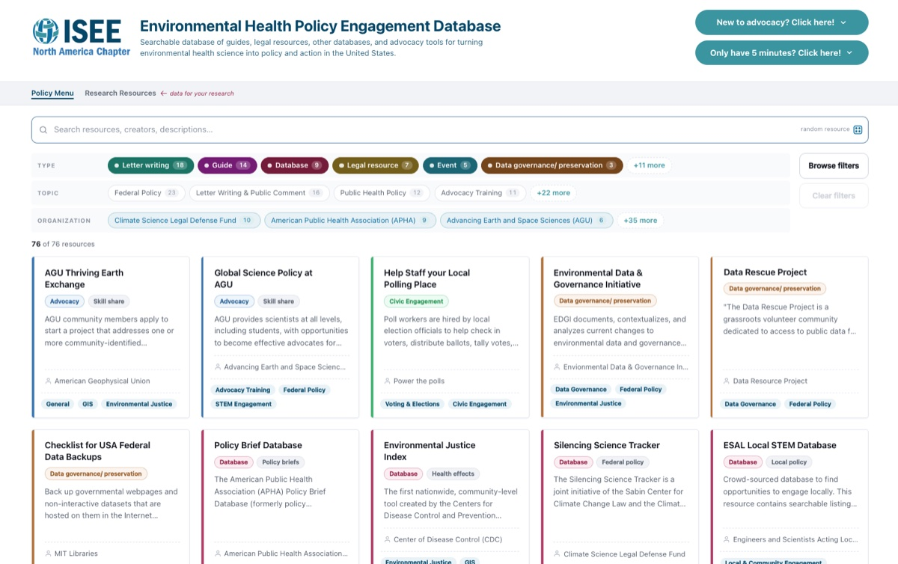

(opens in a new tab)Environmental Health Policy Engagement Database
A searchable collection of guides, legal resources, and advocacy tools for anyone working to turn environmental health science into policy and action in the U.S.
Co-created with Ryan Dalforno for the Policy Committee of the International Society for Environmental Epidemiology (ISEE) North America Chapter.
Explore the policy menu (opens in a new tab)
Have feedback or a resource to suggest? Share it here (feedback form, opens in a new tab).